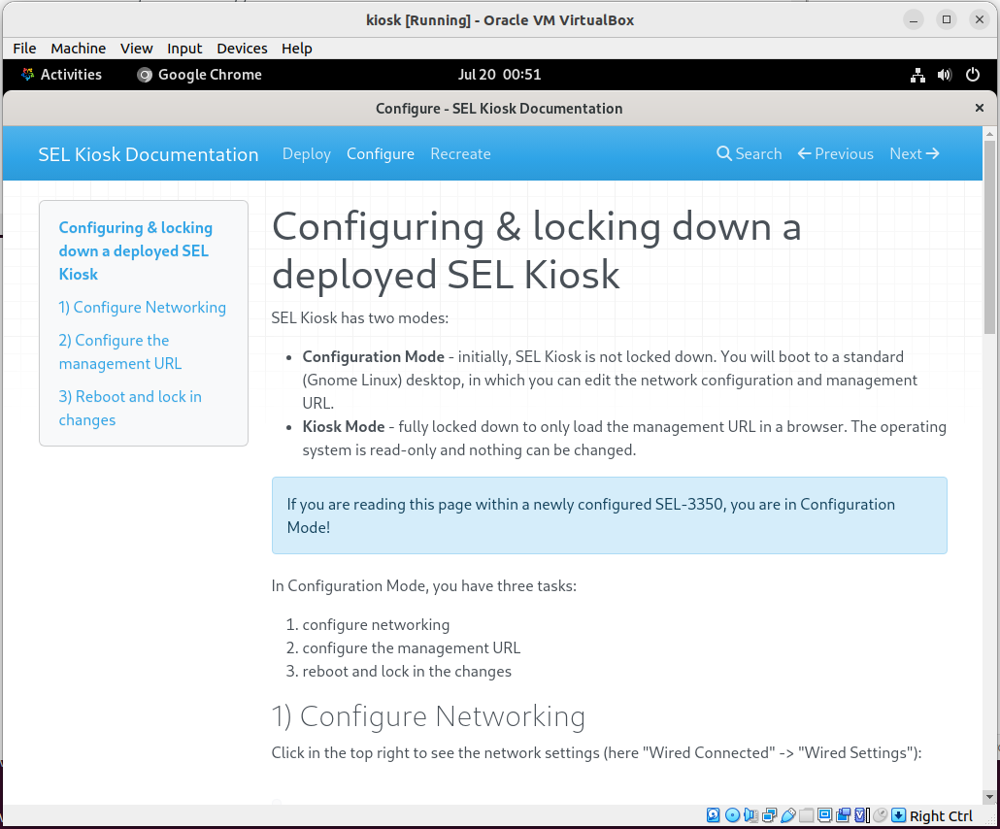

Building a KioskMaker image
Note
If you would like a kiosk image built for you, the author is available for consulting. KioskMaker originated as a consulting project.
Here we describe how to build your own kiosk disk image.
Requirements
You will need:
- A Linux environment (I use Ubuntu 25.04, but any will do)
- Virtualbox (tested with 7.1.12)
- A clean AlmaLinux iso image (tested with AlmaLinux 10).
- A lot of patience as you follow the docs, and run the indicated scripts, and repeatedly rebuild and tweak your kiosk in Virtualbox.
Install VirtualBox
VirtualBox is quite fiddly to install, at least on Ubuntu. I install VirtualBox by:
- downloading the latest Virtualbox .deb
dpkg -ithe .debapt install --fix-brokento get missing dependencies- Adding myself to
vboxusers:groupadd vboxusers sudo usermod -aG vboxusers $USER newgrp vboxusers - Launch virtualbox from my
vboxusers-enabled shell:Nothing else virtualization-related can be running. E.g. uing a Ryzen CPU, I got this error:virtualboxThis is fixable by runningVBoxManage: error: VirtualBox can't enable the AMD-V extension. Please disable the KVM kernel extension, recompile your kernel and reboot (VERR_SVM_IN_USE) VBoxManage: error: Details: code NS_ERROR_FAILURE (0x80004005), component ConsoleWrap, interface IConsolesudo rmmod kvm kvm_amd.
If you get weird errors, try deleting ~/.VirtualBox/ to clean out old settings from past installations.
Deploy AlmaLinux to a Virtualbox VM
The process of setting up a VirtualBox VM and installing AlmaLinux is fully automated by the 01_createkiosk_virtualbox script:
#!/bin/bash -eu
# Creates a Virtualbox VM called 'kiosk', running AlmaLinux.
#
# AlmaLinux installation is automated via the ./ks.cfg Kickstart configuration.
# Please edit ./ks.cfg before running this script, or add --manual to do OS
# configuration by hand.
#
# Flags:
# --wipe any existing kiosk VM is wiped and recreated
# --manual allow manual installation rather than Kickstart automation
#
# After running, you may SSH into the VM with ./sshkiosk or proceed to ./02_kioskify-vm
# Get the desired 'minimal' ISO url and sha256sum from https://almalinux.org/get-almalinux/
#url="https://repo.almalinux.org/almalinux/10/isos/x86_64/AlmaLinux-10.0-x86_64-minimal.iso"
url="https://repo.almalinux.org/almalinux/10/isos/x86_64/AlmaLinux-10.0-x86_64-dvd.iso"
#sha256sum=e73ccc95ff21a43ab23eebe227257fa34df091570b2bcf8a23f918bf9b662fc3
sha256sum=6c443f462b3993d15192a7c43ba8dfa3f232514db47d38796dab007a7455ae1a
downloaddir=~/Downloads
k=kiosk
vmbase=~/VirtualBox\ VMs
vmdir="$vmbase/$k"
fail() { echo >&2 "$*"; exit 1; }
iso="$downloaddir/$(basename "$url")"
[[ -f "$iso" ]] || (
cd "$downloaddir"
curl -C - -LOJ "$url"
)
#sha256sum "$iso" | grep -q "$sha256sum" || fail "$iso does not match sha256 checksum $sha256sum"
[[ -d $vmbase ]] || fail "Missing $vmbase. Is Virtualbox not installed?"
if VBoxManage list vms | grep -q "\"$k\""; then
if [[ $* =~ --wipe ]]; then
while true; do
eval "$(VBoxManage showvminfo "$k" --machinereadable | grep -P '^(VMState)=')"
echo "State: $VMState"
case "$VMState" in
running) VBoxManage controlvm "$k" poweroff;;
poweroff) break ;;
esac
echo -n .
sleep 0.1
done
rm -f ./tmp/known_hosts
sleep 0.4
else
fail "'$k' already exists. Add --wipe to recreate the VM (and its disk)"
fi
fi
# Detach and nuke disk
if VBoxManage showmediuminfo "$vmdir"/"$k".vdi | grep -q "State.*created"; then
VBoxManage storageattach "$k" --storagectl "SATA Controller" --port 0 --device 0 --type hdd --medium none &>/dev/null || :
VBoxManage closemedium "$vmdir"/"$k".vdi --delete
rm -rf "$vmdir"/"$k".vdi
fi
# Nuke vm
if VBoxManage showvminfo "$k" &>/dev/null; then
VBoxManage unregistervm "$k" --delete
fi
VBoxManage createvm --name "$k" --ostype "Linux_64" --register
VBoxManage modifyvm "$k" --memory 4096
VBoxManage modifyvm "$k" --firmware efi
VBoxManage modifyvm "$k" --cpus 2
# Minimal requires 8Gb. Graphical requires 10Gb
VBoxManage createmedium disk --filename "$vmdir/$k.vdi" --size $((8*1024))
VBoxManage storagectl "$k" --name "SATA Controller" --add sata --portcount 2
VBoxManage storageattach "$k" --storagectl "SATA Controller" --port 0 --device 0 --type hdd --medium "$vmdir/$k.vdi"
VBoxManage storageattach "$k" --storagectl "SATA Controller" --port 1 --device 0 --type dvddrive --medium "$iso"
if [[ $* =~ --manual ]]; then
:
else
# Copy our Kickstart config file into a virtual 'oemdrv' disk, and mount it.
mkdir -p ./tmp/oemdrv
cp ks.cfg ./tmp/oemdrv
mkisofs -q -o tmp/oemdrv.iso -V OEMDRV -r -J tmp/oemdrv
VBoxManage storageattach "$k" --storagectl "SATA Controller" --port 2 --device 0 --type dvddrive --medium ./tmp/oemdrv.iso
fi
if [[ ${*:-} =~ --guestadditions ]]; then
# For config, we rsync (over ssh) file to /opt/kiosk/template. An alternative is to install VirtualBox Guest Additions and share a disk, but rsync seemed simpler (and I need ssh anyway)
VBoxManage storageattach "$k" --storagectl "SATA Controller" --port 3 --device 0 --type dvddrive --medium /usr/share/virtualbox/VBoxGuestAdditions.iso
fi
VBoxManage modifyvm "$k" --boot1 dvd --boot2 none --boot3 none --boot4 none
VBoxManage modifyvm "$k" --vram 16
VBoxManage modifyvm "$k" --graphicscontroller vmsvga
VBoxManage modifyvm "$k" --natpf1 "guestssh,tcp,,2222,,22"
VBoxManage startvm "$k"
01_createkiosk_virtualbox, but you probably will need to edit the Kickstart config file, specifically the keyboard, lang and timezone sections:
# Kickstart config, baked into tmp/oemdrv.iso by ./01_createkiosk_virtualbox, and then automatically used by the AlmaLinux installer.
# You will likely want to change 'keyboard', 'lang' and 'timezone' entries.
#
#version=RHEL10
# Use graphical install
graphical
%addon com_redhat_kdump --enable --reserve-mb='auto'
%end
# Keyboard layouts
keyboard --xlayouts='au'
# System language
lang en_AU.UTF-8
%packages
@^minimal-environment
# We need other packages, not bundled in the 'minimal' ISO, so they are dnf install'd later, when /opt/kiosk/kioskfiy runs inside the VM.
# Speed up boot by not having kdump.service create /boot/initramfs-*kdump.img on crashes
-kdump-utils
%end
# Run the Setup Agent on first boot
firstboot --enable
# Generated using Blivet version 3.10.0
ignoredisk --only-use=sda
# There should be no partitions yet
clearpart --none --initlabel
# EFI partition (600M)
part /boot/efi --fstype=efi --size=600 --asprimary
# /boot partition (1G)
part /boot --fstype=xfs --size=1024 --asprimary
# Create PV on rest of disk (6.4G)
part pv.01 --size=1 --grow
# I would like to just 'autopart', but 'autopart' under Virtualbox results in a volume group called 'almalinux_vbox', whereas our bootloader entry (copied-to-kiosk/opt/kiosk/template/boot/loader/entries/rw.conf.template) wants 'almalinux'
# Volume group name as seen: almalinux
volgroup almalinux pv.01
# Logical volume for root (5.6G)
logvol / --vgname=almalinux --name=root --fstype=xfs --size=5632
# Logical volume for swap (820M)
logvol swap --vgname=almalinux --name=swap --size=820
# System timezone
timezone Australia/Sydney --utc
# Root password ('kiosk')
rootpw --iscrypted --allow-ssh $y$j9T$mVqH2L1qeNxEiiB2cUezEIRa$BDQQa31tEwcWZrqqNuD6HBxURk9ryt.vi/6xJYlrjA2
reboot
ks.cfg and run ./01_createkiosk_virtualbox. If all goes well, a fresh VM will be created, and boot pointing to the AlmaLinux iso.


After kicking off the installation, no further interaction should be required from you. The installation should automatically start:

Once the installer completes you can reboot, and the VM should boot into a terminal prompt. You now have a clean AlmaLinux ready to be turned into a kiosk.
Kioskify the OS
We now need to turn our vanilla AlmaLinux install into a kiosk. This is done with the 02_kioskify-vm script:
#!/bin/bash -eu
# Given a clean AlmaLinux install accessible via SSH on localhost:2222 (see
# ./ssh_config_kioskclient), this
# script turns the remote AlmaLinux into a Kiosk by copying our additions to kiosk:/opt/kiosk, and
# invoking /opt/kiosk/kioskify to apply them.
#
# Implementation notes:
# - Permissions and ownership of files we add are important. We don't bother to get them correct
# outside the VM, as we don't know the 'kiosk' UID in the VM, and it's easy to forget to chown
# 1000:1000 new kiosk-owned files. Instead, we rsync everything to kiosk:/opt/kiosk/template/ and
# run /opt/kiosk/kioskify, which bulk-fixes /opt/kiosk/template/ permissions and ownership before
# copying the files to /.
# - Assuming 'kiosk' is from Virtualbox, we could have mounted ./copied-to-kiosk/opt/kiosk/template/opt/kiosk/ as a
# shared folder, but that requires installing Virtualbox Guest Additions, which is a palaver.
KIOSKMODE_GRUB_PASSWORD=kioskmaker
fail() { echo >&2 "$*"; exit 1; }
# Export vars so
edit_kiosk_dconf() {
export HOME=$PWD/copied-to-kiosk/opt/kiosk/template/home/kiosk
[[ -d $HOME ]] || fail "Could not find $HOME"
eval "$(dbus-launch --sh-syntax)"
export XDG_RUNTIME_DIR=/tmp/kiosk-runtime-user
trap 'kill "$DBUS_SESSION_BUS_PID"' TERM EXIT
}
# Customize the kiosk user's desktop background (for configuration mode), before we copy files onto
# the VM.
# If you want to change the blue/black gradient, change that here.
# To use a custom background image, first copy it to:
# ./copied-to-kiosk/opt/kiosk/template/home/kiosk/.local/share/backgrounds/
# then edit the 'picture-uri' line below.
#
# These commands alter ./copied-to-kiosk/opt/kiosk/template/home/kiosk/.config/dconf/user which is a
# binary registry, requiring us to fire up a temporary dbus process to edit it. An alternative would
# be to run the kiosk VM, log in (read/write), manually change desktop settings as desired, then
# rsync the ~kiosk/.config/dconf/user file from the VM to the ./copied-to-kiosk location.
setbackground() (
# https://askubuntu.com/a/973307/528035
#https://github.com/GNOME/gsettings-desktop-schemas/blob/master/schemas/org.gnome.desktop.background.gschema.xml.in
bgset() { gsettings set org.gnome.desktop.background "$@"; }
bgreset() { gsettings reset org.gnome.desktop.background "$@"; }
echo "Before:"
gsettings list-recursively | grep background
bgreset picture-uri
bgset picture-uri 'file:///home/kiosk/.local/share/backgrounds/kioskmaker.svg'
bgset picture-uri-dark 'file:///home/kiosk/.local/share/backgrounds/kioskmaker.svg'
gsettings set org.gnome.desktop.screensaver picture-uri 'file:///home/kiosk/.local/share/backgrounds/kioskmaker.svg'
#bgset picture-options 'zoom' # Scale the bg image to the desktop size
bgset picture-options 'zoom'
# The shading colours are irrelevant when a picture is set, but if picture-options is set to 'none' these take effect
bgset primary-color '#000000' # Black
bgset secondary-color '#0b406b' # Blue
bgset color-shading-type 'vertical' # Gradient direction
# Doesn't seem to work. Would be nice if we could display url.txt
#bgset show-desktop-icons 'true'
echo "After:"
gsettings list-recursively | grep background
)
disable_upgrades() {
# Something wrong here - org.gnome.software doesn't exist
#gsettings set org.gnome.software download-updates false
#gsettings set org.gnome.software download-updates-notify false
#gsettings set org.gnome.software allow-updates false
#gsettings set org.gnome.software allow-upgrade false
:
}
sync_files_on_kiosk() {
# Install rsync so repeated runs are fast
./sshkiosk "command -v rsync &>/dev/null || dnf install -y rsync"
rsync -e "ssh -F ./ssh_config_kioskclient" -rlR ./copied-to-kiosk/./opt/kiosk kiosk:/ -v --delete
# kioskify creates the 'kiosk' user, copies /opt/kiosk/template to / and does other setup tasks
}
# Set grub password required to switch from ro to rw mode.
set_grub_password() {
local binary
binary=/usr/bin/grub2-mkpasswd-pbkdf2 # as on Redhat OSes
[[ -x $binary ]] || binary=/usr/bin/grub-mkpasswd-pbkdf2 # as on Ubuntu
[[ -x $binary ]] || fail "Cannot find $binary"
local passhash
# Simulate logic in /usr/sbin/grub2-set-password on almalinux (not present on ubuntu)
passhash="$({ echo "$KIOSKMODE_GRUB_PASSWORD"; echo "$KIOSKMODE_GRUB_PASSWORD"; } | LC_ALL=C "$binary" | grep -v '[eE]nter password:' | sed -e "s/PBKDF2 hash of your password is //")"
echo "Setting grub password '$KIOSKMODE_GRUB_PASSWORD', hash: $passhash"
echo "GRUB2_PASSWORD=$passhash" > ./copied-to-kiosk/opt/kiosk/template/boot/grub2/user.cfg
}
./sshkiosk --init
# Update template files before copying to kiosk
./copied-to-kiosk/opt/kiosk/template/tmp/chrome/fetch-chrome # Get and cache the Chrome RPM
(
:
edit_kiosk_dconf
setbackground
#disable_upgrades
) || echo $?
set_grub_password
./docs/build
rsync -rR ./docs/site/./ ./copied-to-kiosk/opt/kiosk/template/var/www/kiosk/docs
sync_files_on_kiosk
./sshkiosk /opt/kiosk/kioskify
echo "VM has been kioskified. You may now reboot it, and should expect to see kiosk grub boot options"
# vim: set tw=100:
Before running 02_kioskify-vm, edit it and change KIOSKMODE_GRUB_PASSWORD to a unique password. This password will be needed later if you want to convert a locked-down kiosk back to 'configuration mode'.
When running ./02_kioskify-vm there will be a lot of text output, which must end with the VM has been kioskified line. If not, the script failed part-way and you will have to examine it and debug.
If kioskify fails...
The 02_kioskify-vm script copies ./copied-to-kiosk/opt/kiosk to /opt/kiosk on the VM, and then invokes /opt/kiosk/kioskify inside the VM. If anything breaks, you can edit ./copied-to-kiosk/opt/kiosk/kioskify locally, then re-run ./02_kioskify-vm to deploy and re-run it. /opt/kiosk/kioskify is idempotent and can be run as many times as necessary. See opt/kiosk-contents
Reboot the now-kioskified VM (e.g. ssh kiosk reboot). It should boot with 3 Grub boot options:

Choose the 'read-write' option.

Your Virtualbox VM is now in the KioskMaker configuration state, ready to be packaged. You might like to save an image of the VM.
Now shut down the kiosk VM very carefully by running ssh kiosk shutdown now, not by simply powering down the VM. Powering down the VM would leave the disk filesystem in a dirty state.
Recreating the raw disk image
We can now generate a 'raw' image of the kiosk.
Proceed as above with 01_createkiosk_virtualbox and 02_kioskify-vm. Then run 03_create_disk_image:
jturner@jturner-desktop:~/kioskmaker$ ./03_create_disk_image --wipe
+ rm -f '/home/jturner/VirtualBox VMs/kiosk10/kiosk10.img'
+ vboxmanage internalcommands converttoraw '/home/jturner/VirtualBox VMs/kiosk10/kiosk10.vdi' '/home/jturner/VirtualBox VMs/kiosk10/kiosk10.img'
Warning: program compiled against libxml 212 using older 209
Converting image "/home/jturner/VirtualBox VMs/kiosk10/kiosk10.vdi" with size 8589934592 bytes (8192MB) to raw...
+ echo 'kiosk.img generated. Contents (fdisk -l):'
kiosk.img generated. Contents (fdisk -l):
+ fdisk -l '/home/jturner/VirtualBox VMs/kiosk10/kiosk10.img'
Disk /home/jturner/VirtualBox VMs/kiosk10/kiosk10.img: 8 GiB, 8589934592 bytes, 16777216 sectors
Units: sectors of 1 * 512 = 512 bytes
Sector size (logical/physical): 512 bytes / 512 bytes
I/O size (minimum/optimal): 512 bytes / 512 bytes
Disklabel type: gpt
Disk identifier: 6C8DCAED-4D3A-45A4-A23B-40F7CD002E03
Device Start End Sectors Size Type
/home/jturner/VirtualBox VMs/kiosk10/kiosk10.img1 2048 1230847 1228800 600M EFI System
/home/jturner/VirtualBox VMs/kiosk10/kiosk10.img2 1230848 3327999 2097152 1G Linux filesystem
/home/jturner/VirtualBox VMs/kiosk10/kiosk10.img3 3328000 16775167 13447168 6.4G Linux LVM
#!/bin/bash -eu
# Creates a raw disk image of kiosk.vdi suitable for writing to a physical hard disk.
fail() { echo >&2 "$*"; exit 1; }
k=kiosk
vmbase=~/VirtualBox\ VMs
base="$vmbase/$k/$k"
[[ -f "$base.vdi" ]] || fail "Missing $base.vdi. Run ./01_createkiosk_virtualbox and ./02_kioskify-vm"
if [[ -f $base.img && ${1-} != --wipe ]]; then
fail "$base.img already exists. Pass --wipe to delete it"
else
set -x
rm -f "$base.img"
vboxmanage internalcommands converttoraw "$base.vdi" "$base.img"
# This also works:
#qemu-img convert -f vdi -O raw "$base.vdi" "$base.img"
echo "kiosk.img generated. Contents (fdisk -l):"
fdisk -l "$base.img"
fi
You now have an image that can be dd'ed straight to the disk of a kiosk. See ./04_burn_physical_disk for how to do that:
#!/bin/bash -eu
# Writes the kiosk.img raw disk image to a /dev/disk device.
vmbase=~/VirtualBox\ VMs
k=kiosk
base="$vmbase/$k/$k"
fail() { echo >&2 "$*"; exit 1; }
# Specify path of a physical disk here
#dev="/dev/disk/by-id/ata-Samsung_SSD_840_EVO_250GB_S1DBNSAFC17384M"
dev="/dev/disk/by-id/ata-SPCC_Solid_State_Disk_A20231027S3051211573"
case "${1:-}" in
--usb)
usb=$(echo /dev/disk/by-id/usb*:0)
[[ -n $usb ]] || fail "USB not inserted"
[[ $usb =~ \s ]] || fail "Multiple USBs found - or the USB-identifying glob is incorrect: $usb"
dev="$usb"
;;
--zfs)
# For testing, this uses a ZFS zvol device. Customize for your ZFS filesystem
fs=secondary2023/kiosk
echo "Using zvol $fs"
zfs list -Ht volume -o name "$fs" 2>/dev/null || sudo zfs create -V 8G $fs
dev=/dev/zvol/$fs
;;
--help)
echo "Usage: $0 [--zfs|--usb]"
exit 0
;;
esac
dev="$(readlink -f "$dev")"
if grep ^"$dev" /proc/mounts; then
fail "Please unmount partitions of $dev - otherwise they will not be readable from within the VM"
fi
[[ -f $base.img ]] || fail "Missing $base.img. First run 03_create_disk_image"
if [[ -e $dev ]]; then
time sudo dd if="$base.img" of="$dev" bs=1M status=progress
sync
else
echo "Please connect disk $dev"
fi
In my case, the kiosks run on SATA SSDs which are hot-pluggable (at least on my computer). This allowed fairly rapid burning of multiple SSDs - just editing $dev in the above script. The SSDs were later installed into kiosks.
Addendum: Choice of base OS
KioskMaker is currently built on AlmaLinux. These were the criteria considered:
Windows?
Windows has a Kiosk mode, and it is apparently possible to make Windows 10+ read-only with the Unified Write Filter. I did not explore this, on the assumption that telemetry, Cortana, and other junk would be too hard to remove, and Window LTSC edition too hard to (legally) obtain.
Driver availability and Secure Boot friendliness
If your kiosk runs on specialized hardware, you'll need to check driver availability.
My target kiosk hardware is a SEL-3350 fanless computer designed for running in substations and other industrial settings. SEL provides drivers for Red Hat (RHEL) and Debian-derived operating systems. This eliminates a few possibilities like Porteus (Slackware-based), NixOS and Alpine.
RHEL or Debian? Again, drivers may be a factor. Ideally you want drivers signed for your kernel version. DKMS drivers require turning off Secure Boot in the BIOS, or enrolling the DKMS signing key in the BIOS of every deployed kiosk. Neither option is appealing.
Kiosk mode support
By 'kiosk', we mean a computer that automatically starts one app, without login, with minimal UI distractions, locked down to prevent accidental or malicious changes. There are some common options:
1) gnome-kiosk
In RHEL/Gnome, the minimal one-app kiosk environment is supported directly by the gnome-kiosk and gnome-kiosk-script-session packages, and documented by redhat. gnome-kiosk is not available in Debian/Ubuntu. This is the solution KioskMaker uses.
2) Ubuntu Core
The canonical way to make a kiosk out of Ubuntu is to build on Ubuntu Core, with the wpe-webkit-mir-kiosk snap. Ubuntu Core is snap-based, completely containerized and optimized for security. However, in practice:
- The focus on containerization and security makes development complicated, cumbersome and slow. Any changes must be packaged as 'gadget snaps', defined in a model, and the OS rebuilt. OS hangs are almost impossible to debug.
- wpe-webkit-mir-kiosk is, as the name suggests, Webkit-based, whereas we want Chrome for maximum compatibility. Apparently Chrome is too difficult to containerize, so there is no wpe-chrome-mir-kiosk.
- The documentation is incomplete and the project seems half-abandoned. Possibly because Mir (the technical base) is a technological dead end, a Wayland alternative part of the now-abandoned Unity desktop environment, later repurposed for 'IoT'.
3) Customized window manager
To get a minimal kiosk-like effect, we could also have used Gnome Shell with extensions (1, 2) and tweaks hiding as much UI as possible. The problem with this approach is that we also want Gnome Shell used in 'configuration mode' to not be locked down. We would need two distinct copies of /home/kiosk for ro and rw modes. It is simpler to have the kiosk user's Gnome Shell environment used only for rw mode, and gnome-kiosk used for ro mode.
Besides Gnome Shell, there are any number of naturally minimalist stripped-down window managers that would work, or simply .xinitrc launching a browser. gnome-kiosk is just simpler, and handles restarts of the app correctly.
Read-only support
When in kiosk mode, the disk must be read-only, with any apparent writing (e.g. browser caches) going to RAM. Power-cycling the kiosk must restore it to its original condition.
Redhat-derived distributions natively support this through the readonly-root package. The documentation describes how to mark particular directories, like /home/kiosk as in-RAM overlays of the underlying disk.
Debian-derived distributions also support this via the overlayroot package. There is little documentation, but it worked as expected.
Full or minimal?
Initially I started with the AlmaLinux 'minimal' iso, and added just enough packages required to get Gnome running. However, 'just enough' is hard to determine, and configuration is flaky. For instance, with my hand-picked packages:
- Gnome settings app hangs when I try to set the timezone automatically.
- There's a strange white block between hour and date:
 - if 'nautilus' isn't present, one cannot pick a background image file.
- if 'nautilus' isn't present, one cannot pick a background image file.
The disk size difference is 4.1Gb (minimal + packages) vs. 4.9Gb (desktop), so in the end I switched to desktop.
Summary
AlmaLinux ticks all the required boxes:
- Secure boot friendly drivers available
- Well-documented kiosk mode
- Well-documented read-only mode